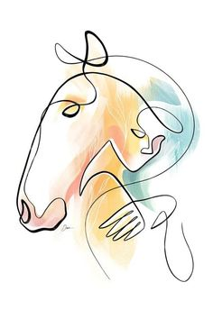
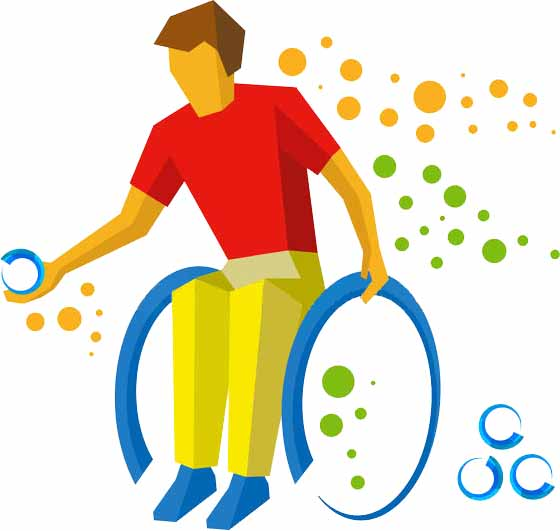
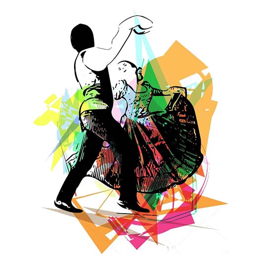
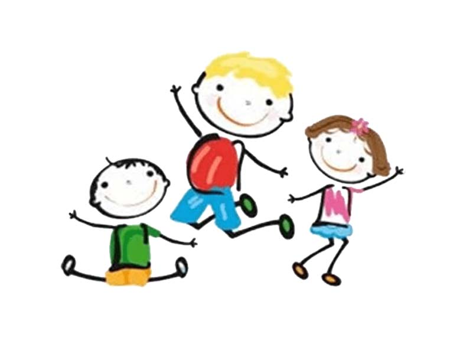
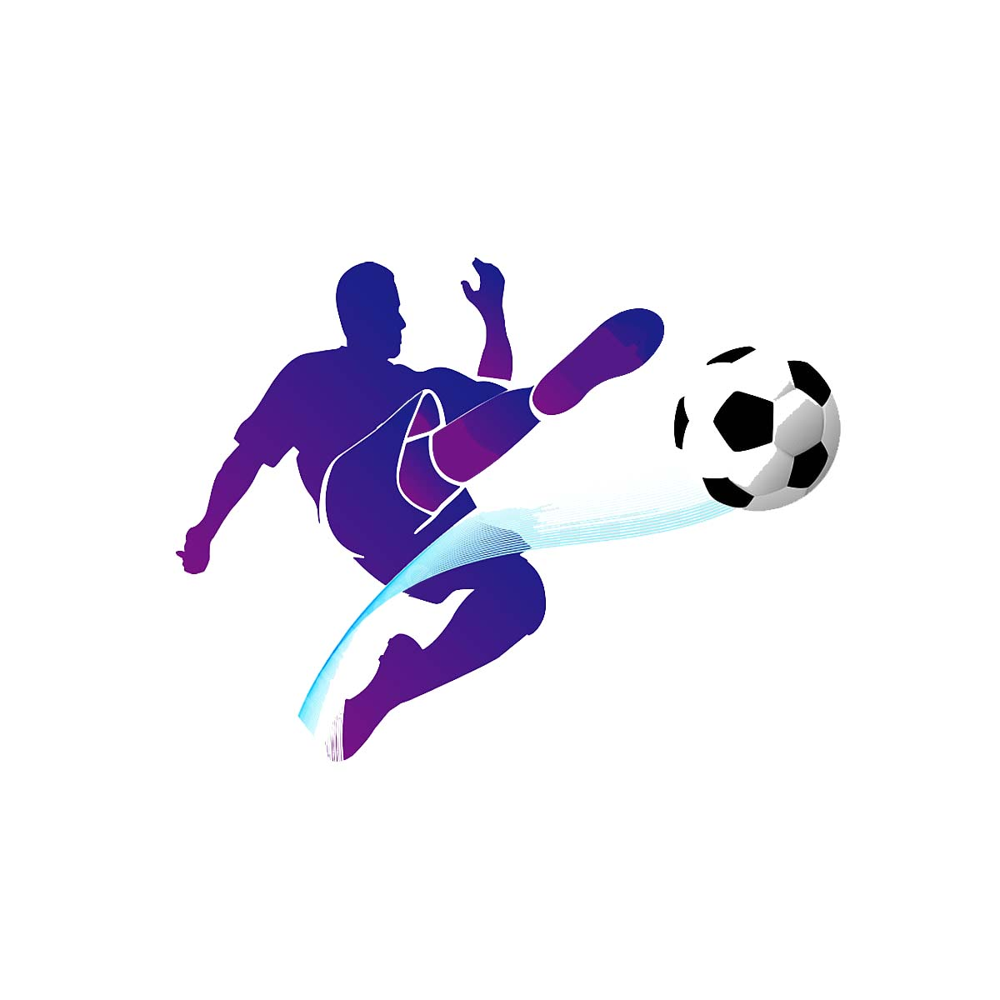
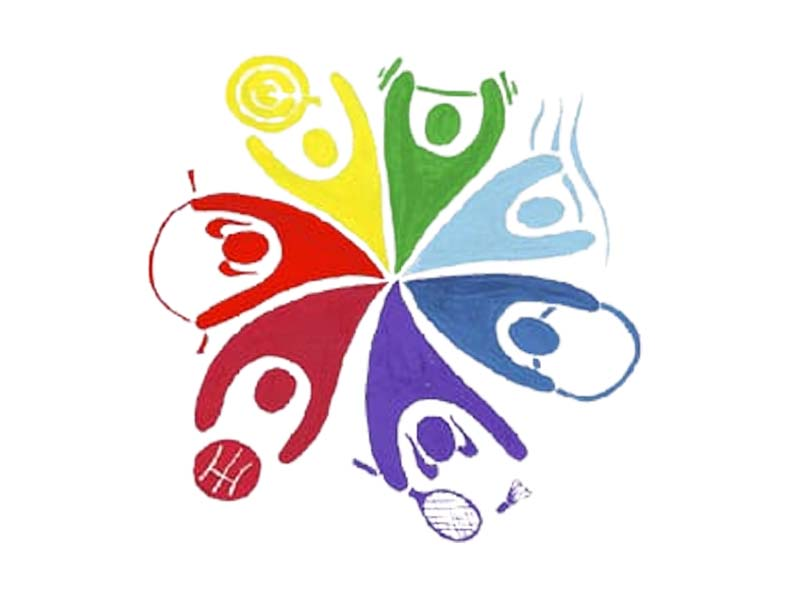

¿Quienes Somos?
La Coordinación de Deporte Adaptado e Inclusivo es un área de la Municipalidad de Las Heras destinado a todas las Personas con
Discapacidad a partir de los 6 años de Edad, pero también de otros departamentos y provincias vecinas.
El objetivo es diseñar e implementar programas que se transformen en políticas públicas que favorezcan el desarrollo
integral de las Personas con Discapacidad , permitiendo la convivencia de todos los ciudadanos del departamento a través
de actividades físicas-deportivas, recreativas, terapéuticas y competitivas de acuerdo a su grado y tipo de discapacidad.
Equinoterapia

Es una técnica empleada para promover la rehabilitación de niños adolescentes y adultos a nivel
neuromuscular psicológico cognitivo y social por medio del caballo como herramienta terapéutica. Se fortalecen los aspectos
motores sensoriales y emocionales gracias al animal y al contexto donde se realiza la actividad.
Boccia

Es una disciplina de estrategia y precisión para personas con parálisis cerebral o cualquier
tipo de discapacidad física severa que comprometa el uso de las cuatro extremidades, se juega de manera individual por
pareja o por equipos, cada uno representa un color de bochas rojo o azul; el objetivo es propulsar su bocha hacia la bocha de
color blanco y dejarla lo más cercano posible a la misma.
Folklore

Es una actividad para todas las personas con o sin discapacidad a partir de los seis años en adelante el cual se agrupan en segun su edad.El
ballet del área "nosotros podemos" participa de los distintos eventos que organiza la Municipalidad de Las Heras. Como así
también otros departamentos.
Iniciacion Deportiva

Es una actividad para niños y niñas con discapacidad de los cinco a doce años, que tiene como propósito
la formación integral y la estimulación a través de diferentes actividades predeportivas y juegos adaptados para lograr
el desarrollo social y emocional de los niños.
Futbol

Es una disciplina destinada a personas con discapacidad a partir de los 5 años; El grupo se divide
de acuerdo al nivel de habilidades físicas motrices y deportivas. Los equipos del área participan de la liga provincial de
fútbol cinco adaptados Mendoza
Multideportes

Es una actividad en la que se le ofrece a las personas con discapacidad la posibilidad de conocer
practicar y adquirir una serie de habilidades motrices básicas a través de los diferentes deportes. Además se realizan
actividades físicas para la salud con el objetivo de mejorar el rendimiento físico en general.